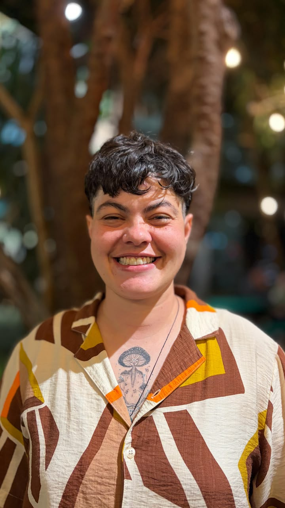

Olá, eu sou a Pam!
Acredito na educação como caminho para transformar realidades e ampliar possibilidades. Ao longo da minha trajetória, tenho aproximado educação, criatividade e tecnologia por meio de experiências de aprendizagem.
Neste portfólio, compartilho um pouco da minha trajetória, dos projetos que desenvolvi e das experiências que refletem meu compromisso com uma educação criativa, significativa e conectada ao mundo contemporâneo.
Conheça minha jornada